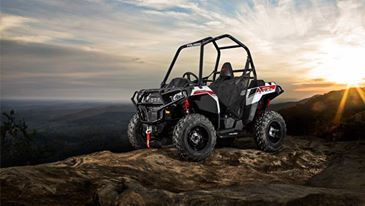

-
 Destructor XR1
Destructor XR1El Destructor XR1 es una de las mas avanzadas piezas de tecnología. Su chasis de adamantio reforzado con espirifitis de plomo y su gran cañon de fideos tirabuzon, lo hacen ideal para repartir pizzas en los barrios mas
Todo Terreno "Amado Bodou"Con el "Amado Bodou" va a ser imposible que vuelques. Posee dos tornepente resorticos que impiden a la mamba roja y negra su total reproducción en épocas humedas y secas. Derechos de copyright asegurados. Por Ley 11.723
-
 MC Guiver 11X
MC Guiver 11XEl MC Guiver 11X es, probablemente, uno de los mas utiles vehiculos del mundo. Deslizador, aeronave, todoterreno, submarino, armario, sandmaster, helicopeto apache, bordeadora nada es imposible para el MC Guiver 11X
 SandMaster 9000
SandMaster 9000Su sistema de resortecitos de última generación permite al manejador mas pete del mundo alcanzar el nivel de profesionalismo de Schumacher. Gracias a sus ventanillas totalmente opacas y sus lentes 3d con "surround sound amplif
-
lele
-
lili
-
Modelo Nombre Cilindrada Precio rzr Destructor XR1 917 c3 211309 chelines rzr Todo Terreno "Amado Bodou" 1214.4 c3 1400001 rupias ranger MC Guiver 11X 4923 c3 + 2 tomahawk 300000 euros ranger SandMaster 9000 17056 c3 902003 yuanes